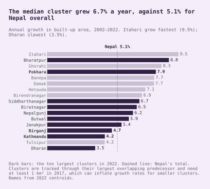
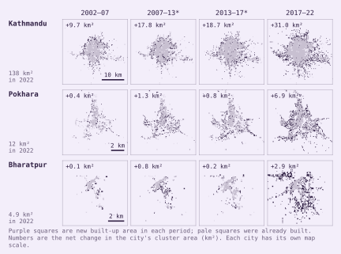
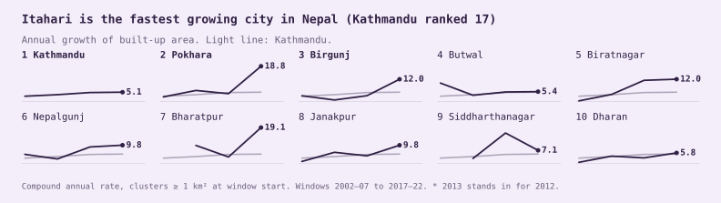

cities blog
wip
fig 1: Nightime radiance of Nepal, 2022
Every day satellites orbit the earth and take a picture at 1:30 a.m. These satellites map out where it is lit every night. Economists have been using this data as a reliable proxy for economic activity—especially when granular data is scarce. One striking fact is that most economic activity seems to concentrate in a relatively small number of places. Why might that be? Why does economic activity concentrate? Is this concentration desirable? Even if it is, why might we still want decentralization? I try to answer these in this blog.
The chart above maps the ten largest clusters for 2022 in Nepal. These clusters are a continuous patch of built up area1. Think of these clusters as the actual footprint of a city. Administrative boundaries alone cannot tell us how far the cities extend themselves. Kathmandu and Bhaktapur, for example, are two different administrative cities, but they are part of a single cluster. These clusters capture the scale of an agglomeration.
As can be seen in Fig. 1, these clusters are the hotbeds of economic activity (see where the largest spikes are).
Among the ten largest clusters, only three are in the hills: Kathmandu, Pokhara and Dharan. Kathmandu is the country’s political and economic capital, and it dwarfs all the others in size. It is 11 times larger than the second-largest cluster, Pokhara. The rest of the clusters are in the plains—the Terai. There are no clusters in the mountains. In terms of population Kathmandu(the agglomeration) is 5-8 times larger than Pokhara—city with the 2nd highest population2.
Kathmandu is what economists call a primate city—it is the countries’ singular political and economic capital, so much more influential than all other cities. Primate cities are a common occurrence. We see them in the developed world: Paris has 7 times more people, London 4 times, Vienna 5 times than their respective 2nd largest city. We see them in the developing world too. Bangkok is 8 times larger.
We cannot reason whether this is problematic or desirable through size alone. Multiple factors come into play. We come back to this below.
Kathmandu’s lead has also moved over time:
| year | Kathmandu vs. second-largest cluster |
|---|---|
| 2002 | 17x Birgunj |
| 2007 | 17x Birgunj |
| 2013 | 20x Butwal/Birgunj |
| 2017 | 19x Butwal |
| 2022 | 11x Pokhara |
The gap held between 17 and 20 times until 2017, then fell to 11 times as Pokhara moved into second place.
But why do these clusters form? Why does economic activity concentrate?
Nobel laureate Paul Krugman’s insight is that cities form when we produce goods that are expensive to transport, firms enjoy economies of scale and workers are mobile. Firms seeking to minimize their transport costs while taking advantage of economies of scale locate themselves close to both markets and suppliers. They want to be near large markets, but markets are larger where firms locate, because mobile workers follow the jobs that firms create. Firms and workers therefore draw one another towards the same places, creating a self-reinforcing process.
This, We believe, has a lot of explanatory power in terms of explaining why and where our clusters emerge. These clusters have all been historically important by virtue of their location. These clusters are trading corridors and manufacturing centers. Several of the Terai clusters—Birgunj, Biratnagar, Nepalgunj, Siddharthanagar—sit on the Indian border.
What is it about these clusters that foster economic activity and growth?
Jane Jacobs argues that the close proximity of people in cities encourages the cross-pollination of ideas. Density makes serendipitous encounters more likely. People from different backgrounds meet, talk and share ideas. These interactions create knowledge spillovers, which help new ideas emerge. And because economic growth depends on ideas, clusters may foster growth through these spillovers.
These clusters—‘cities’—have many desirable properties. They are hotbeds of upward mobility for everyone—especially women. People also earn higher wages in cities. Given these benefits, making cities function better is essential.
A natural question follows: if cities are so beneficial, why not just have one massive city?
As a city grows and matures, it develops its own institutions, values and norms. Things begin to be done in particular ways and cities specialize in particular things. It has its own incumbent interests and power centers. This process where past processes determines future outcomes is called path dependency.
Path dependence in itself is not bad. In fact, specializing and doing particular things well is very valuable. It builds know-how and the resources to do other related things productively too.
When this does evolve into path lock in, however, it becomes detrimental to a cities’ dynamism. Incumbent who stand to lose from change block the city from branching into new sectors, fearing creative destruction.
A city locking itself into a certain sector faces decline when demand for the product or service it specializes in decreases. The city cannot branch off into other sectors either due to this ‘lock-in effect’.
This is particularly bad for the country if its the singular primate city. When incumbents block changes within the single city with bulk of the national output it creates single points of failure in the economy. Concentration paired with lock in effects make the economy extremely vulnerable to shocks.
Given this, it is important to have other regional clusters—clusters that are not bound by the same established ways of doing things. Surely, they’ll develop their own incumbents with their own norms and power centers but one shock is unlikely to hit all of them. Decentralization, therefore, helps build resilience to shocks which is important, despite the benefits of agglomeration.
Are Nepal’s other clusters growing then? We look at changes in the built up area of Nepal’s clusters between 2002 and 2022. This analysis is limited to clusters that were over 1 in 2017.

The median annual growth rate across the 17 clusters was 6.7% compared with 5.1% for Nepal’s total built up area. Of the 17 clusters, Itahari grew the fastest(9.5%). Kathmandu’s growth rate(4.2%) has been below the national rate, ranking 3rd from the last.
Keep in mind that because Kathmandu starts from a huge base its lower percentage rate still means a lot more new area. It added ~77 compared to 9.4 added by Pokhara over 20 years. Check out the figures below:

This is even more interesting when we look at the most recent period. Between 2017 to 2022, the latest period in my analysis, Kathmandu was the slowest growing cluster. It ranked last among all the 17 clusters.

This chart shows rank changes in growth rate across the successive epochs. These change considerably between periods.
The ranks in terms of absolute area, however, has been remarkably sticky:
Eight of the top 10 clusters in 2002 are still among the top 10 in 2022. Bharatpur’s growth has been quite remarkable climbing up 5 ranks. These are historically important clusters and largely organized without much deliberate planning.
Bibliography:
“The Female Urban Mobility Advantage in South Asia”, Bhowmick et al. (2026). fuma.pdf
“The developing world needs more roads”, Saarthak Gupta (2025)
Appendix:
If you’re familiar with graph theory, each cluster is a connected component—megapixels that exceed the threshold form the nodes of the component and their edges are defined by queen contiguity.↩︎
Estimates of the valley agglomeration vary, with 2.9 million cited in some sources and around 4 million in others. For Pokhara, CBS census figure is 513,504 in 2021. Some listings show about 600,000 instead. That puts the ratio to roughly 5.5-8x.↩︎
- Published
- 13 November 2026
- Updated
- 13 November 2026
- Slug
- /blog/cities-builtup/